Here are some examples of the kind of work students have produced in previous years. I've put them into rough categories so you get an idea of how these websites were marked.
Overall:
pass-rate was 96%
average grade was 64%
about 40% had firsts
I will go through the marking criteria and show examples of each of the three categories ("not addressed", "partially addressed", and "fully addressed") for each of the points.
Screenshots of overall design
Here are some examples of student work from the previous two years, with a rough idea of how they were marked overall.
Please note that this only shows how the pages look, it doesn't show any animations or hover effects, and most of all it does not show the quality of the code. So some of the pages are marked higher or lower overall perhaps than you might expect due to underlying issues with the code. This includes for example API calls that bring in content dynamically from external sources which might not be clear from simply looking at the final design of the website.
Try and fix any errors and address warnings that are raised by the validator. Mostly this will catch serious syntax errors but it also points the way to good practice in general.
1.2. Consistent code nesting and indentation (2 spaces is industry-standard)
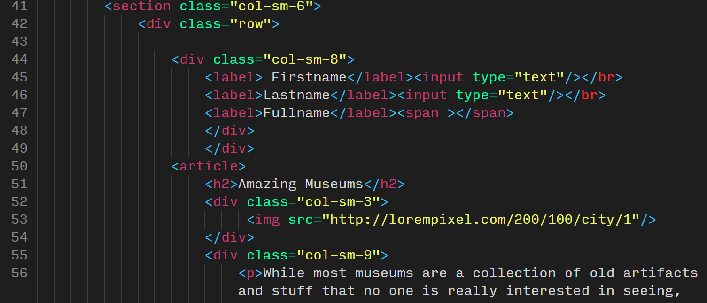
not addressednot addressed
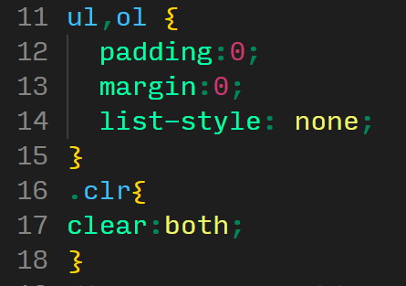
partially addressed
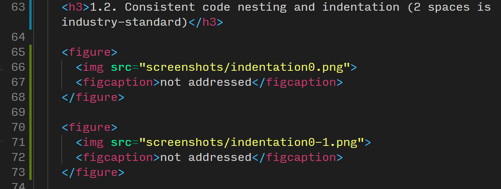
fully addressed
1.3. Separate .css and .js files (e.g. no "style=" or "onclick" in HTML)
This is largely marked on amount of inline logic in the HTML. So for instance one occurance of "onclick" or a "width" declaration inside an <img> tag would be considered "partially addressed". Several instances of this would be "not addressed" and of course no inline styles or scripts would be "fully addressed".
The examples below are taken out of context of the whole repository so I can't really show the grading element for these fairly. Suffice to say inline styles and scripts like these should not happen ever.
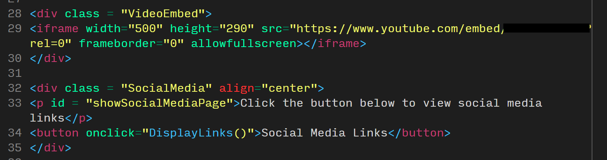
depends on overall number
note missing video tag instead of div, inline styles ("align" marked in red), spaces between attributes and values (e.g. class = "VideoEmbed" instead of class="VideoEmbed"), inline JS (onclick instead of eventListener)
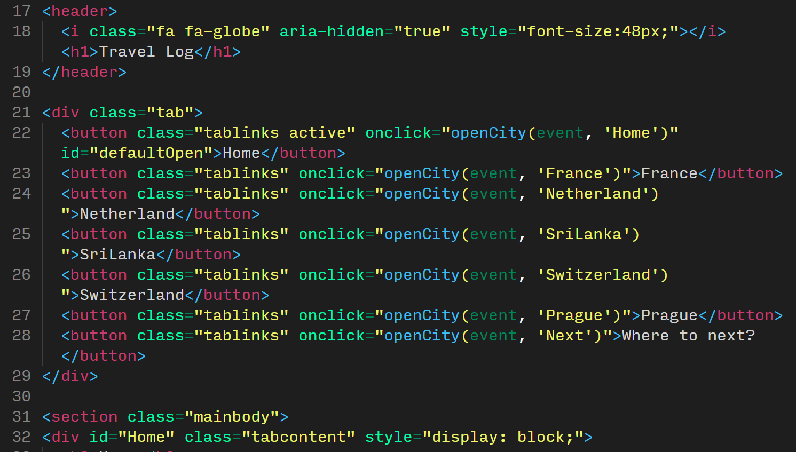
not addressed
note excessive use of onclick, inline styles, the div with class "tab" should simply be a <nav> tag, the section with class "mainbody" should be a <main> tag
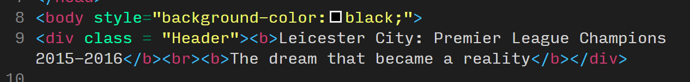
depends on overall number
note the setting of background colour inline and also the div with class "Header" should be a <header> tag, and the <b> tag should be a <strong> tag instead
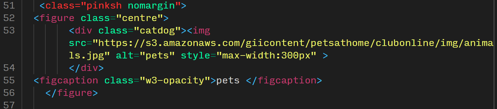
depends on overall number
note line 51 shows a syntax error of a tag without a name just a class, indentation is bad, and contains inline CSS styles for the image
1.4. Use of CSS3 features e.g. flexbox, animations, CSS grid
This largely depends on the number of examples found in the code.
1.5. Tidy file and folder organisation with lower-case names
This should be fairly self-explanatory. Keep file and folder names lower-case and don't include any spaces or underscores (use hyphens if necessary). We normally expect you to keep your images, CSS, and JS files in a separate folder each. Don't include any unused files you used during development. Clean the repository for your final commit. Your main homepage must be called "index.html". This is necessary for GitHub Pages to work and most web servers too.
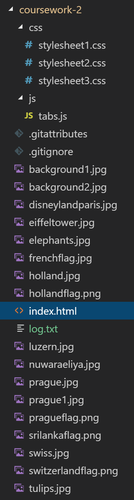
not addressed
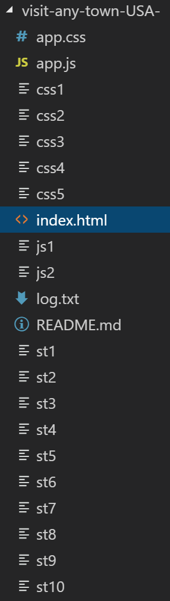
not addressed
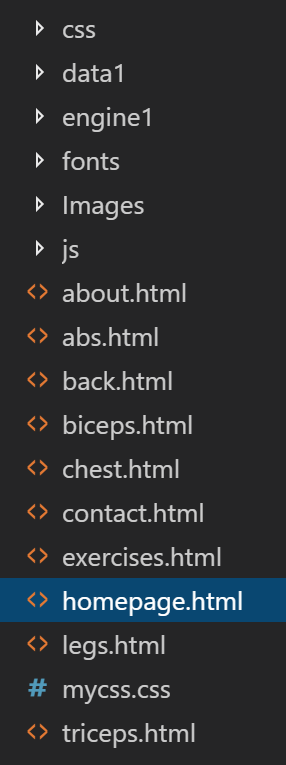
not addressed
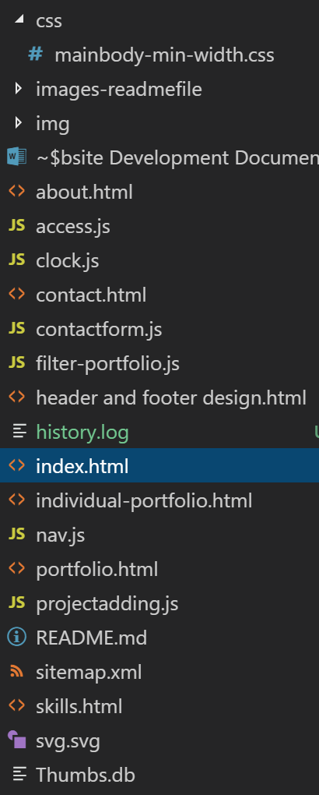
partially addressed
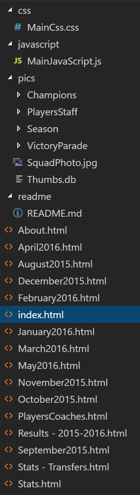
partially addressed
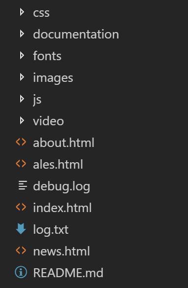
fully addressed
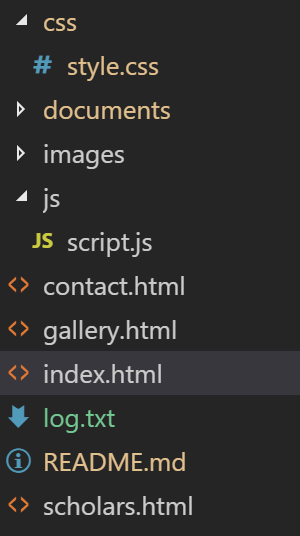
fully addressed
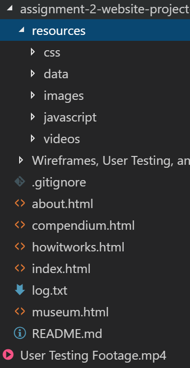
fully addressed
2. JavaScript, APIs & JSON
2.1. No JavaScript errors in the browser console
This largely depends on the number of instances found in the console and the severity of the errors. Errors that break functionality are worse than warnings for example.
2.2. Use of JavaScript for DOM manipulation and/or interaction
This largely depends on how JS was used. For instance if the only JavaScript you use is the Google maps script that you can copy and paste from Google with very minor customisation (e.g. coords) then that will only get you to "partially addressed". Using JavaScript to make a proper API call to get some JSON data for exampple will very likely get you to "fully addressed" (unless it actually doesn't work and contains many errors). An alert box does not really count as "DOM manipulation" so would get "not addressed".
Please not that PHP scripts for contact forms are unmarked - we will ignore them completely. It's not going to affect your mark to have a non-functional contact form.
2.3. ES6 syntax: e.g. "let" and "const" over "var", template literals, arrow functions
2.4. Use of JavaScript to handle data (e.g. JSON from an external API)
As mentioned briefly above in point 2.2 using a Google map in not technically handling JSON data via an API, so this might only get you "partially addressed" (depends on how much you customise the map for instance).
There are many services out there with APIs such as image sites, news providers, weather services, video providers, etc.
The use of the Google Fonts API does not count towards this point.
2.5. DRY code e.g. no repeated similar functions without parameters
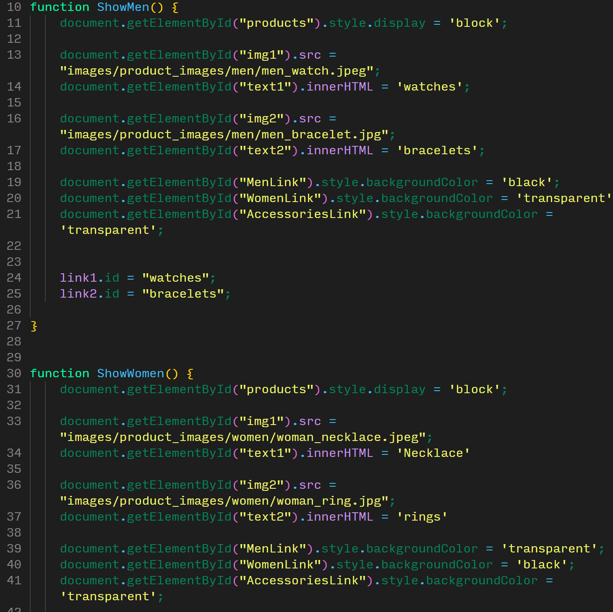
3. Responsiveness, Accessibility and Interaction
3.1. Responsive at any size with mobile-first CSS breakpoints
3.2. Well-ordered information architecture, ease of navigation at all sizes
decent amount of commits although many on the day before the deadline, poor commit messages, note also some experiment with a branch but only to update readme
excellent number of commits spread over time, very good commit messages, note also excellent use of branching for feature development
4.1. Source code and live site on GitHub Pages
This should be "fully addressed" for all of you if you've managed to set up your GitHub Classroom repo properly and enables GitHub Pages in the settings. This is really only for some cases were students simply haven't followed these instructions at all and end up submitting a zip file via email (yes, we've seen it all).
4.2. Use of GIT branches for feature development
Branches are slightly more advanced feature of git. They should normally be used for feature development (e.g. a new JavaScript feature, or a re-design half way through).
"Partially addressed" would be given if there's been some experiments with branches but perhaps incorrectly (e.g. not actually merged back into the master branch, or a branch for a single change in the readme just for the sake of using a branch last minute).
"Fully addressed" would be given to any amount of branches that are sensible.
4.3. Regular commits, not all last few days
There isn't a set amount of commits you have to create in order to get "partially" or "fully addressed" here. It is possible to get full marks for this component if you have ten excellent commits, with very good commit messages spread out over a decent period to show progress.
4.4. Brief, informative commit messages
Look at the examples above to get an idea of what would be considered bad, good, and excellent commit messages.
4.5. Basic readme.md file with references in markdown format
The readme ("readme.md" or "README.md") should contain some key information about your repository and website in valid MarkDown text.
The content of your readme is very individual and depends on your site, the issues you've faced, etc. But at the very least you should include references here to any external sources you've used (e.g. images, text content, embeded videos, API code, code examples from CodePen, W3Schools or other sources, etc.) Note that this does not have to be in Harvard referencing format but could simply be a url with a short description of what it was used for, for example:
# References
- image gallery code taken from [here](https://link.url)
- Google maps code taken from [here](https://link.url)
The beauty of GitHub is that if your readme file is named and formatted correctly then GitHub will automatically display it nicely on your repo website.